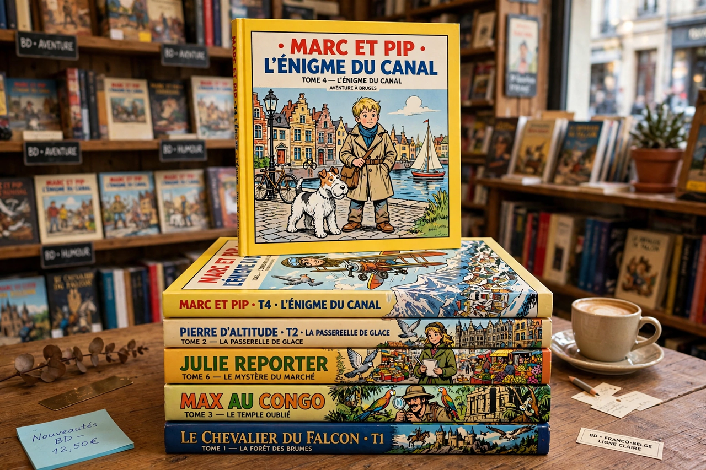

Bande dessinée
| Bande dessinée | |
|---|---|
 | |
| Literal meaning | "Drawn strip" |
| Region | France and French-speaking Belgium |
| Format | Hardcover albums, typically 48 or 64 pages, A4 |
| Key series | Tintin, Asterix, Spirou, Lucky Luke, The Smurfs |
Bande dessinée (pronounced [bɑ̃d desine]; literally "drawn strip"), often abbreviated BD, is the term for comics produced in France and French-speaking Belgium. Franco-Belgian comics constitute one of the three great world traditions of the medium, alongside American comic books and Japanese manga, and in the French-speaking world the bande dessinée is celebrated as the "ninth art" (le neuvième art).
History
The origins of the form include the picture stories of the Swiss pioneer Rodolphe Töpffer in the 1830s and the images d'Épinal popular prints. Modern BD developed in the 20th century through children's magazines: Spirou (founded 1938, Belgium), Tintin magazine (1946), and later Pilote (1959), co-founded by René Goscinny and Albert Uderzo, creators of Asterix. Hergé's Tintin, first published in 1929, defined the ligne claire ("clear line") style and the album format.
After the Second World War, Belgian schools of cartooning — the Brussels school of Hergé and the Marcinelle school around Jijé and Franquin (Spirou, Gaston Lagaffe) — dominated. In the 1970s, adult-oriented magazines such as Métal Hurlant (home of Moebius) pushed the medium toward science fiction and literary themes, and bande dessinée gained increasing cultural and academic legitimacy. The Angoulême International Comics Festival, founded in 1974, became the world's leading comics festival.
Format and market
The classic BD format is the hardcover album: large-format (roughly A4), 48 or 64 pages, printed in colour, sold in bookshops rather than newsstands. France is one of the largest comics markets in the world, with thousands of new titles published yearly; legally, comics enjoy the fixed book price and are central to French publishing. Long-running series such as Asterix (whose albums sell in the millions and are translated worldwide), Tintin, Lucky Luke (Morris), the Smurfs (Peyo), Spirou et Fantasio, and Blake and Mortimer (Edgar P. Jacobs) anchor the tradition, alongside auteur works by creators such as Jacques Tardi, Edmond Baudoin, and Marjane Satrapi (Persepolis).
Style
Franco-Belgian comics are known for meticulous draftsmanship, richly detailed backgrounds, and a balance of adventure and humour aimed at all-ages audiences, though the contemporary field spans children's series, literary graphic novels (romans graphiques), reportage and experimental work.